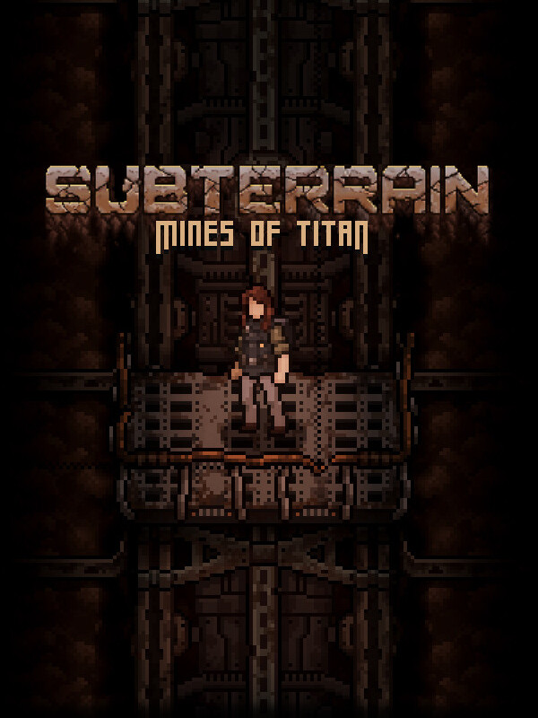

Subterrain: Mines of Titan
Subterrain: Mines of Titan
Details
|  | |
| Playtime | Not Played |
| Last Activity | Never |
| Added | 9/11/2025 15:14:27 |
| Modified | 9/18/2025 12:09:38 |
| Completion Status | Not Played |
| Library | Amazon Games |
| Source | Amazon |
| Platform | Amazon Games |
| Release Date | 3/12/2024 |
| Community Score | |
| Critic Score | |
| User Score | |
| Genre | Indie RPG |
| Developer | PixelLore |
| Publisher | Freedom Games |
| Feature | Single-Player |
| Links | Steam Twitch GOG Epic Discord |
| Tag | [GGDeals] Synced |
Description

After a massive meteor strikes the icy surface of Titan, nothing is left but a vast deposit of rare minerals. The TECC mining company rushes to establish a colony on Titan and successfully tap the riches, until the colony goes dark. It takes years to mount a salvage expedition to the far flung moon of Saturn, so make it count. Restart the flow of resources and figure out what happened to the first wave of colonists.
Stand between the sole survivors of Camp Huygens and total obliteration by Saturn's darkest mysteries. Every turn counts in the desperate struggle for survival, as Titan will not wait around - and neither should you.

- Titan is an unrelenting dynamic, persistent world. Every action and step advances time and brings Camp Huygens closer to collapse, unless someone intervenes.
- Help surviving colonists with their tasks, assign key jobs, harvest materials, and organize crafting stations to keep the doom at bay.
- Manage food and water intake, keep tabs on oxygen and energy levels, and treat any sustained injuries, all while penetrating the abandoned mining tunnels beneath the surface.
- Track the passage of time efficiently or it might turn out that the greatest threat to Camp Huygens isn't Titan or its monsters... but you!

- Unearth the mysteries of Saturn's most famous moon and go deep beneath its surface to face off against its many horrors.
- Fight the monstrosities using intuitive, brisk turn-based combat. Do you make the fight close and personal, risking death as you go toe to toe? Or plink from afar, hoping that ammo won't run out at the wrong time?
- Harness the power of nanomachines to unleash devastating abilities against foes, but also sacrifice the ability to physically pummel monsters into submission?
- Gain experience and power alongside the celestial creatures underground. Evolve and adapt tactics, or perish in the darkness of Titan's mines!

- Craft an endless array of items thanks to a small handful of allies like weapons and elbow grease.
- Salvage what you can, break it down into materials, and produce tools like melee weapons, firearms, protective gear, explosives, and countless survival upgrades.
- Enhance yourself with medical supplies and continue research to develop even better versions.
- Survive long enough to unearth the terrible truth of what happened to the first wave of colonists or find a way to get off the doomed moon, no one said you get both...